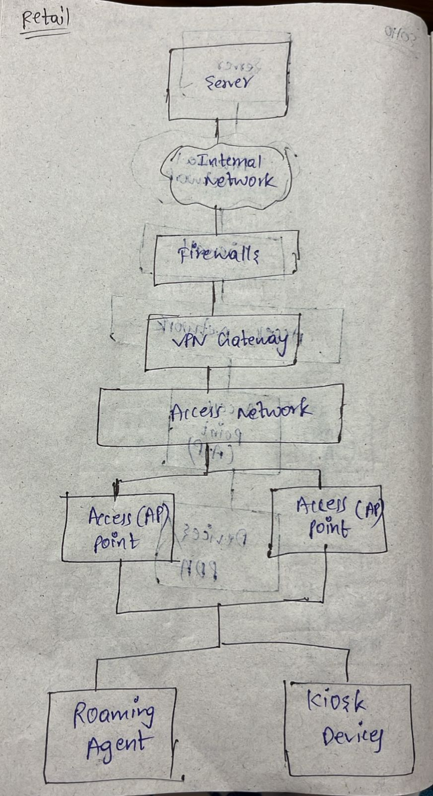

5) Retail and Manufacturing Design
Roaming Agent and Kiosk devices are a wireless network architecture used in Retail and Manufacturing Design
- Servers:
- They provide services like DNS, DHCP, Logging and Applications
- Firewall:
- Protects the Network from unwanted traffic
- VPN Gateway:
- It provides secure communication between access points and the server
- Access Points:
- It acts as a bridge between wired and wireless networks
- Roaming Agents:
- Roaming Agents are PDA with Scanners
- Kiosk devices:
- Kiosk devices are PDA with Printers

Advantages:
- They provide security
- They provide secure communication
- Simplicity
- Mobility
Disadvantages:
- Uses Old Security models like WEP
- It requires backend servers; failure in that server affects the entire system
- Not easy to maintain